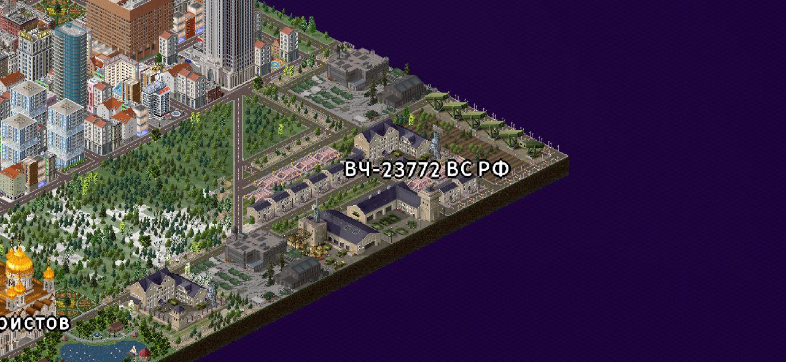
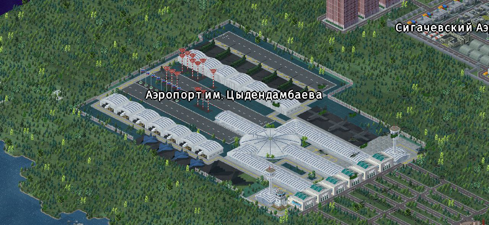
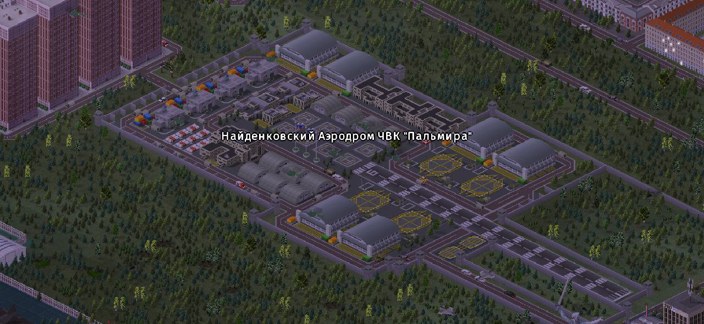
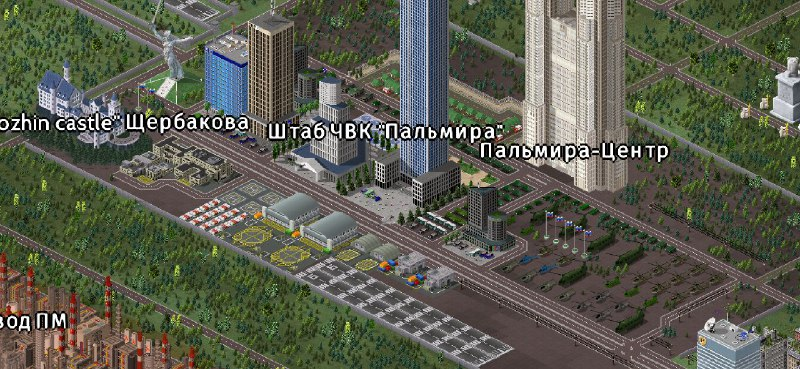
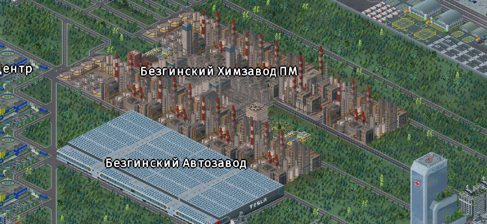
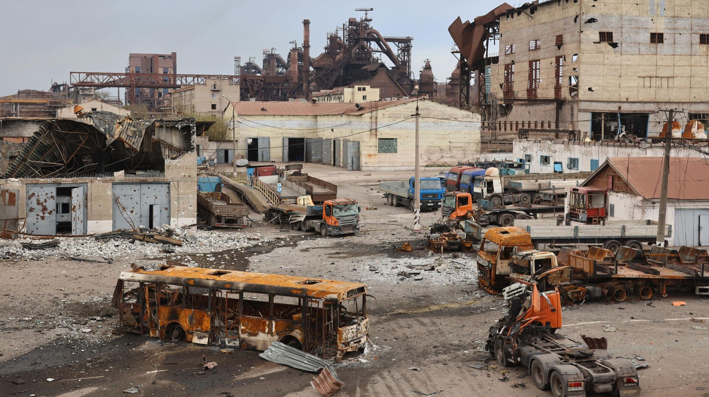
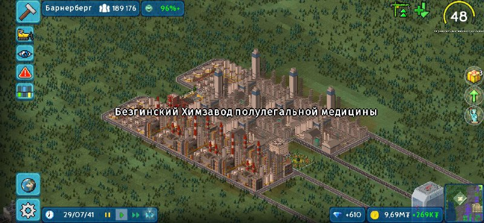
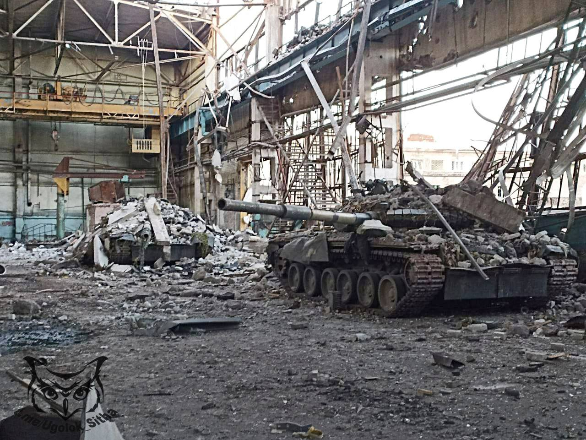

Свежее
Массовое отключения света в Пивчанске 16-18.01.2024
Наше новостное агенство приносит свои извинения за отсутвие новостей по Пивчанским боям. Наш офис
не отвечал нам два дня, руководство приняло решение направить в Пивчанск пару военных журналистов,
чтобы они разузнали обстановку. Как выяснилось, в Пивчанске из-за боев были повреждены линии электроснабжения,
и поэтому у нас не было связи с нашим офисом. Новости за эти два дня: 13-ая танковая дивизия подменила Спецназ на позициях
, и до сих пор ведет бои. 16.01.2024 в 23:17 по местному времени прогремели ряд взрывов. Наши коллеги сразу выдвинулись к источнику- Химзаводу.
В окрестностях завода догорали остовы бронемашин террористов- это значило, что дивизия справлялась, но как мы выяснили позже, это была военная авиация,
прибывшая на аэропорт им. Цыдендамбаева. Также во время того как мы осматривали место бомбардировки, мы заметили колонну
бронетехники с опознавательными знаками ЧВК Пальмиры. Буквально через мгновение в 30 метрах от наших корреспондентов снаряд окончательно
снес руины огромного забора БзПМа. Наших корреспондентов взяли на борт БТР-82А и они направились прямо на завод. Пивчанская 13-ая бронетанковая дивизия вступает в бой 16.01.2024
С территории ВЧ-23772 ВС РФ к заводу выдвинулась 13-ая бронетанковая дивизия под командованием Полковника Сигачева.
Военные намерены быстро разоружить террористов и освободить людей. В стенах химзавода по прежнему находятся порядка 100000 работников.
Тем временем на аэропорт им. Цыдендамбаева прибывает боевая авиация. Местная ЧВК "Пальмира" крайне озабочена ситуацией, так как по словам одного из командиров -
"Какого хрена у нас под боком творится суета и без нас!". ЧВК намерены оказать поддержку ВС РФ, бронетехника и личный состав готовы к бою. На Найденковском аэродроме,
принадлежащем ЧВК, готовятся к вылету




В Пивчанске продолжаются бои. 16.01.2024
Со вчерашнего дня идут бои с применением тяжелой техники с обеих сторон. Спецназ смог выбить бандитов с автозавода, ОПГ закрепились на Химзаводе.
Из плена освободили 29647 из 125256 работников. Раненые доставлены в областной многофункциональный госпиталь им. Сивак.
Полковник Щербаков заявил, что теперь это дело ВС РФ, так как спецназу тяжело бороться с бронетехникой.


Безгинский Химзавод полулегальной медицины захвачен ОПГ! 15.01.24
В соседней Пивчанской ОЭМЗ, в городе Пивчанск, ОПГ захватили Безгинский Химзавод ПМ и автомобильный завод. Ген. директор Безгина дала комментарий:
"Что я думаю по поводу захвата моего завода? Я крайне недовольна, опечалена. Мои работники сейчас числятся пропавшими без вести.
Вся документация сейчас в руках ОПГ.
ОПГ оставили меня почти ни с чем. Что я планирую делать дальше?
Пока не могу сказать. Безнаказанными они не уйдут".
Полковник Щербаков направил спецназ к заводу,
идут бои с применением тяжелой техники с обеих сторон. Просим вас оставаться дома.


Угон танков! 10.01.2024
Вчера, примерно с 14:10 до 14:40, на территорию гос. объекта проникли две неустановленные личности.
Предположительно это были два преступника, скрывающихся от сил МВД. По данным, предоставленным УМВД по Капибарску-Александровскому,
подозреваемые обвиняются по статьям 20.17 КоАП РФ, 228, 210, 223, УК РФ, а также в краже : 43 АК-74М, 21 АК-103, 5 РПГ-7, 342 ПМ
и в угоне с ВЧ-23771 9 БТР-82А, 3 Т-72Б3, 2 Т-80У и 1 Т-90У.Лица нарушителей запечатлила камера наблюдения:
 Комментарий Полковника УФСБ по Капибарской ОЭЗ Щербакова: На данный момент мы наблюдаем очень нехорошую ситуацию.
Двое неустановленных личностей обманным путем проникли на территорию военной части. И тут началось самое интересное:
один из них перехватил танк,после чего начал кошмарить военный контингент. Тем временем, вторая личность проникла на склад оружия. Сотрудники незамедлительно вызвали наряд спецназа ФСБ.
И в скором времени,сотрудники правоохранительных органов взяли часть штурмом без единой жертвы, но личности скрылись.
Комментарий Полковника УФСБ по Капибарской ОЭЗ Щербакова: На данный момент мы наблюдаем очень нехорошую ситуацию.
Двое неустановленных личностей обманным путем проникли на территорию военной части. И тут началось самое интересное:
один из них перехватил танк,после чего начал кошмарить военный контингент. Тем временем, вторая личность проникла на склад оружия. Сотрудники незамедлительно вызвали наряд спецназа ФСБ.
И в скором времени,сотрудники правоохранительных органов взяли часть штурмом без единой жертвы, но личности скрылись.